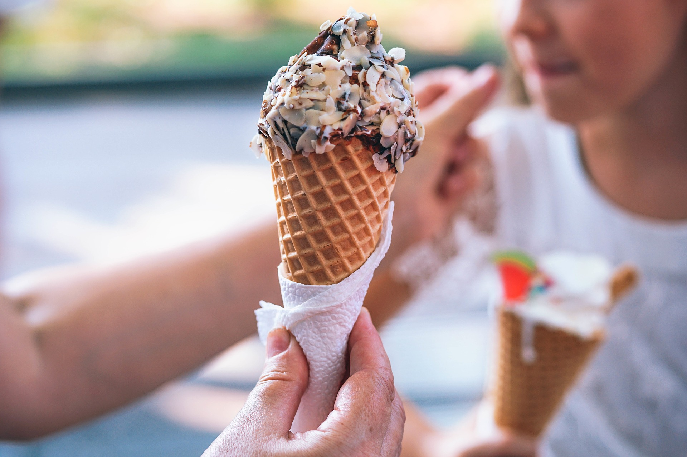

Sustainable Scoops, commonly known as "S-Scoop", started as a local Ice Cream shop in 2012. It began when owner and founder, Victoria Saidel, learned how to make homemade ice-cream. She crafted the perfect recipe and wanted to share it with the world. Due to S-Scoop's popular, farm fresh ice cream, multiple locations around New Hampshire have blossomed in recent years. In 2015, a new location opened in Durham, New Hampshire. In 2020, another location opened in Hampton, NH. S-Scoop's plans to continue it's expansion within the next five years.
There are many reasons why to choose Sustainable Scoops as your “go to” ice cream shop. S-Scoops strives to remain eco-friendly and in line with UN Sustainable Development Goal #12: Ensure Sustainable Consumption and Production Patterns. All of our cups, straws, napkins, and packaging is 100% biodegradable. Not only that, S-Scoops also ensures all products come from local, sustainable farms. Inside each of our locations you’ll find the names of which local farms are supplying what ingredients! Additionally, all ice cream sold by S-Scoops is homemade and packaged/scooped daily. You wont find cooler ice cream anywhere else!